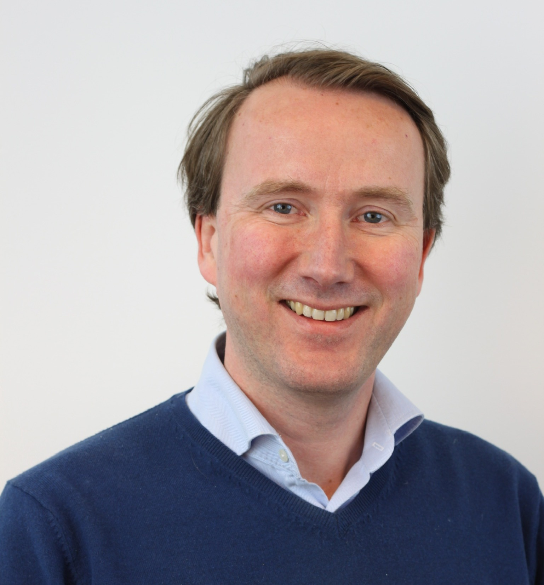

About this workshop
Most ITSC discussions are more about algorithms, controllers, and protocols than about the compilation, qualification, and deployment steps those discussions ultimately depend on. This workshop puts on the table what those works rely on: qualified compilers, independent verifiers, and the integrators who land that trust chain in production.
The half-day program follows the trust chain in order. An independent verifier (Solid Sands) frames toolchain qualification; a qualified-compiler vendor (HighTec) shows what a multi-architecture safety-qualified C/C++/Rust compiler looks like in practice; an autonomous-transit integrator (2getthere) traces how compiler-anchored trust is inherited under ISO 26262, ASPICE, and SOTIF in an L4 autonomous transportation system. A 20-minute moderated research panel closes by drawing the three perspectives together.
Speakers

Sjoerd van der Zwaan — Solid Sands B.V.
From Code to Confidence: Toolchain Qualification in Intelligent Transportation Systems
Intelligent Transportation Systems (ITS) increasingly rely on sophisticated C and C++ software to manage complex, real-time safety functions. While safety standards like ISO 26262 require rigorous verification of application code, the underlying toolchain — specifically compilers and runtime libraries — often receives less scrutiny. Because these tools translate high-level source code into executable behaviour, defects within them can introduce critical faults even when the source code is perfectly correct. Furthermore, the traditional approach of one-time qualification is no longer sufficient in modern environments where toolchains evolve through frequent updates, security patches, and optimizations.
To address this, we introduce continuous toolchain qualification as a systematic method for maintaining trust throughout the ITS lifecycle. This approach integrates automated verification directly into CI/CD pipelines, enabling revalidation whenever toolchains or build configurations change. This presentation details the practical implementation of such a framework, including the structure of compiler test suites, strategies for validating complex optimization passes, and techniques for scaling execution across heterogeneous hardware targets. We also discuss the role of change impact analysis and regression detection in maintaining qualification status. By establishing a reusable foundation for continuous verification, organizations can generate auditable evidence, reduce late-stage risks, and ensure sustained compliance with evolving regulatory expectations for safety-critical systems.
Materials
Slides (PDF) · published with the speaker’s consent.
Sjoerd van der Zwaan is a leading expert in autonomous systems with over a decade of experience in Intelligent Transport Systems (ITS). As Chief Product Officer at Solid Sands, he directs product strategy for safety-critical components, specializing in compiler validation and toolchain qualification for embedded systems. His expertise in robotics, AI, and computer vision ensures that development processes meet rigorous safety standards. Previously, as CTO at 2Getthere, Sjoerd led the innovation of autonomous transit solutions. With a background in Electrical and Computer Engineering, he is dedicated to shaping the future of mobility. By bridging cutting-edge technology with reliable verification, Sjoerd advances smart, safe transportation solutions globally.
Dániel Szűcs — HighTec EDV-Systeme GmbH
Safety Qualified Multi-Architecture Rust and C/C++ Compiler
The ever-evolving landscape of Software Defined Vehicles (SDVs) demands that increasingly complex software be shipped faster while still maintaining a safe and secure design. Safety separation of vehicle components is shifting away from multiple physical hardware devices toward multiple co-located software components. It is no longer sufficient to ensure system safety through design and testing alone; engineers need to trust that the code itself is inherently safe. Rust represents a paradigm shift in this regard, offering compile-time safety guarantees that afford higher confidence in software integrity and robustness while integrating seamlessly with legacy C/C++ codebases.
HighTec's multi-architecture Rust and C/C++ development platform enables the use of these languages in safety-critical systems. We develop these toolchains in close cooperation with silicon vendors and provide long-term support with automotive-grade services. To achieve ISO 26262 safety qualification, we have developed toolchain error models, feature specifications, test cases, and known-bug models that together establish a rigorous safety case.
This presentation gives key insight into the practical challenges and solutions of bringing Rust into automotive safety-critical environments. We detail our ISO 26262 qualification approach, including how compiler correctness is argued and evidenced through structured error and bug models. Furthermore, we discuss how Rust's type-level guarantees complement, rather than replace, traditional verification methods such as static analysis and testing, and present lessons learned from integrating Rust alongside existing C/C++ toolchains in safety critical automotive development.
Materials
Slides and recording to follow, pending the speaker’s clearance.
Dániel Szűcs is a Project Lead Developer at HighTec EDV-Systeme GmbH, where he leads development of the industry's first ISO 26262 ASIL D qualified Rust toolchain for automotive embedded systems. He is an expert on the LLVM based Rust compiler infrastructure, building robust testing frameworks which enable functional safety qualification for safety-critical microcontroller platforms. He oversees CI/CD pipeline architecture that streamlines development cycles while maintaining rigorous certification requirements. His work combines deep Rust language expertise with compiler engineering and automotive safety standards, delivering production-grade tooling for embedded applications that require ASIL D compliance. He bridges open-source systems programming and certified safety engineering for next-generation software-defined vehicles.
Yang Xiao — 2getthere
Bringing Standards into Product: ISO 26262 + ASPICE + SOTIF in an L4 Autonomous Transportation System (ATS)
Deploying safety-compliant autonomous vehicles in the real world remains a major challenge for intelligent transportation systems. 2getthere's Group Rapid Transit (GRT) system is a fully autonomous, high-capacity transport platform. In developing its collision-avoidance software, three complementary frameworks were applied in combination.
ISO 26262 provided the product-safety backbone: identifying hazardous scenarios, determining the required ASIL allocation and the corresponding development rigour per safety goal, translating abstract safety goals into concrete functional and technical safety requirements together with their architectural realisation, and consolidating the resulting evidence into a structured safety case that supports release of the vehicle.
ASPICE supplied the process-capability skeleton for software development: a lifecycle structure with defined work products, bidirectional traceability, and supporting processes. It was applied in particular to the perception software stack, so that the technical quality demands of ISO 26262-6 are met without re-inventing the development framework.
ISO 21448 (SOTIF) addressed the residual risk that ISO 26262 cannot reach: the absence of unreasonable risk arising from the intended functionality of the system or from its reasonably foreseeable misuse had to be demonstrated throughout development, and unknown hazardous scenarios encountered in the field had to be detected and mitigated rapidly to keep the function free from unreasonable risk in operation.
This presentation shares practical lessons learned from qualifying a transit system under the combined ISO 26262, ASPICE, and SOTIF framework, and offers an end-user perspective on translating safety standards and structured development processes into an operational, safety-qualified product.
Materials
Slides (PDF) · published with the speaker’s consent.
Yang Xiao is the product owner for autonomous driving (AD) perception software at 2getthere, where she focuses on the multimodal sensor calibration solution and the collision avoidance solution for Level 4 autonomous Group and Personal Rapid Transit systems. Previously, as an R&D software developer, she delivered ASPICE-compliant, ISO 26262-aligned software for L4 AD projects. She holds a Ph.D. from the University of Birmingham, specialising in high-resolution automotive imaging radar for AD applications, with publications in international journals and conference proceedings. Her work bridges automotive perception research and production-grade safety engineering for autonomous mobility.